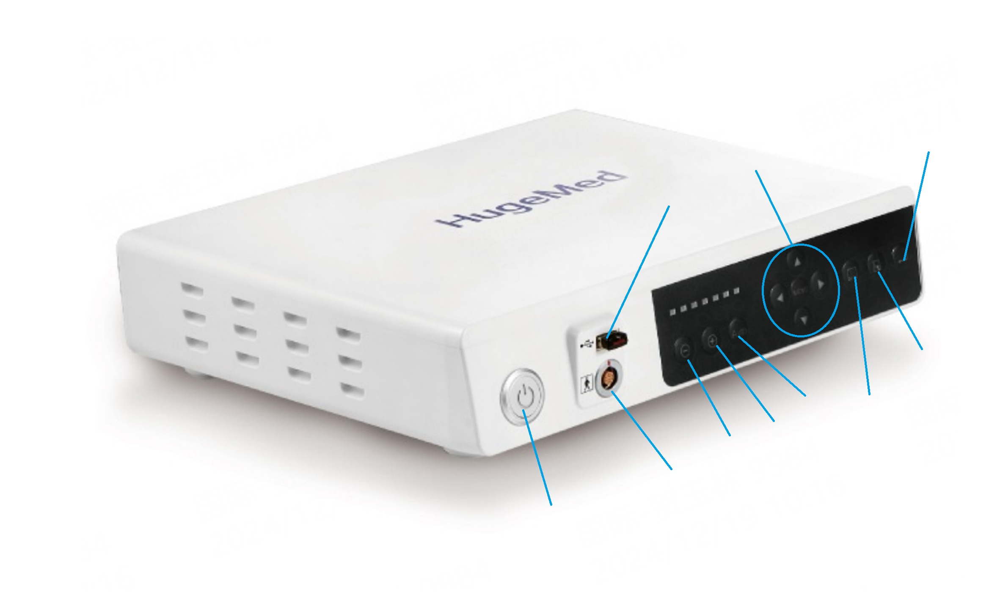

Cihazın ana güç kontrolüdür. Sistemi güvenli bir şekilde başlatır ve kapatır.
Fiber optik üreterorenoskop bağlantısı için kullanılan teknik giriş noktası.
Görüntü ve video verilerini dışa aktarmak veya yazılım güncellemeleri için kullanılır.
Işık kaynağından gelen şiddeti manuel olarak düşürmek için kullanılır.
Karanlık alanlarda görüntü netliği için ışık şiddetini artırır.
Ortamın ihtiyacına göre ışık seviyesini cihazın otomatik optimize etmesini sağlar.
Cihaz arayüzündeki ayarlar menüsünde gezinmeyi ve değerleri değiştirmeyi sağlar.
Renklerin doğru görünmesi için kameranın beyaz referans ayarını yapar.
Operasyon anındaki canlı görüntüyü bağlı depolama birimine kaydeder.
Açık olan alt menülerden çıkış yapmayı veya ana ekrana dönmeyi sağlar.